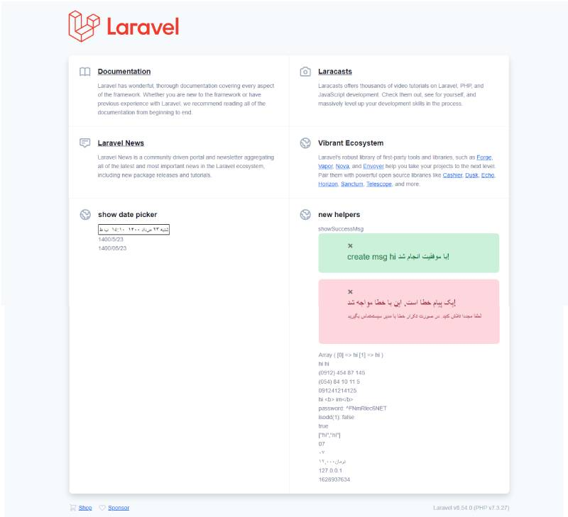

تقویم فارسی برای لاراول
تقویم فارسی برای لاراول برای برگرداند تاریخ های میلادی به شمسی و برعکس است.
من خودم برای تبدیل تایم استمپ موجود تو بانک به تاریخ شمسی ازش استفاده میکنم.
چه جوری کار میکنه
من خیلی اهل کد نویسی پیچیده نیستم برای همین همه چیز رو ساده نگه داشتم.
- 1- composer create-project laravel/lavarel [youeproject name] --prefer-dist
- (above line will install laravel for more information go to laravel web site.)
- 2- download (koodex-persian-date-picker or clone it)
- 3- add content of public folder from downloaded koodex persian date picker to your laravel project
- (in this folder we have jquery it's from download jquery if you wana you could upgrate it to final release)
- (persian date picker for javascript from persian date picker you can upgrate it too.)
- (bootstrap from free version of mdbootstrap. this upgrate able too.)
- 4- in downloaded koodex persian date picker find resource folder replace content file Welcome.blade.php with same in your laravel project
-
5- in downloaded koodex persian date picker find the helper and copy the content to you'r laravel vendor project in this address
(your project address)\vendor\laravel\framework\src\Illuminate\Foundation - this is for laravel 8.5.4 if your laravel version is diferente. dont replace helper.php instead of that open helper.php from our git and find //my functions for that press ctrl+f and type //my function then copy all linse bellow this line to the end and paste them at the end of your laravel helper file in this address
-
(your project address)\vendor\laravel\framework\src\Illuminate\Foundation - 6- serve laravel project and in your web browser go to root url of your project
- on git bash
-
$ php artisan serve - on google chorme
- http://localhost:8000
جزئیات بیشتر
در ترمینان یا gitbash دستور زیر رو درج کنید.
composer create-project laravel/laravel --prefer-dist
حالا از آدرس
تقویم فارسی لاراول
حالا پوشه thehelper رو دانلود کنید.
در ترمینال لاراول خود دستور
npm update
رو اجرا کنید.
حالا محتوای پوشه ایی که دانلود کردید به آدرس زیر کپی کنید.
<yourlaravelpath>\vendor\laravel\framework\src\Illuminate\Foundation\
حالا مراحل افزودن تقویم فارسی را انجام دهید سپس در ویو خود کدهای زیر را درج کنید.
<?php
use \Illuminate\Foundation\Jdate;
$Jdate = new Jdate();
?>
{{($Jdate->jdate("Y/m/d","now"))}}

هلپرهای جدید واسه لاراول
همینطور که در سمت پایین چپ عکس میبینید تقویم درج شده و با کمک هلپر با لاراول میشه دادههای تقویم فارسی رو مدیریت کرد.
در پایین سمت راست چند تا هلپر واسه لاراول اضافه کردم. که اگر بدرتون میخوره شما هم میتونین اضافه کنین.
طراحی و توسعه توسط سامان بالاهنگ در شرکت کودکس
//TODO:
- افزودن پکیج به نرم لیست پکیج های معروف